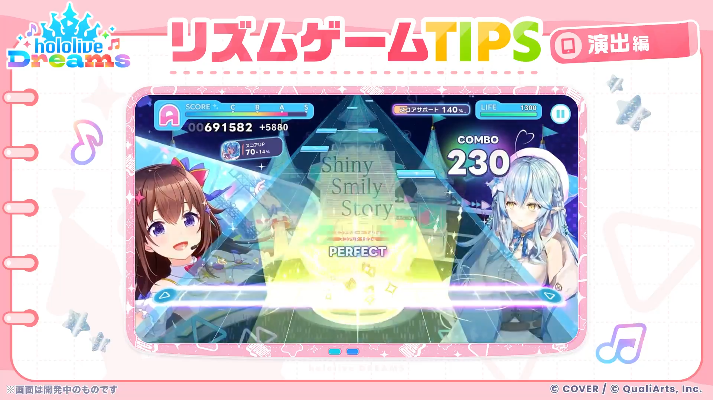
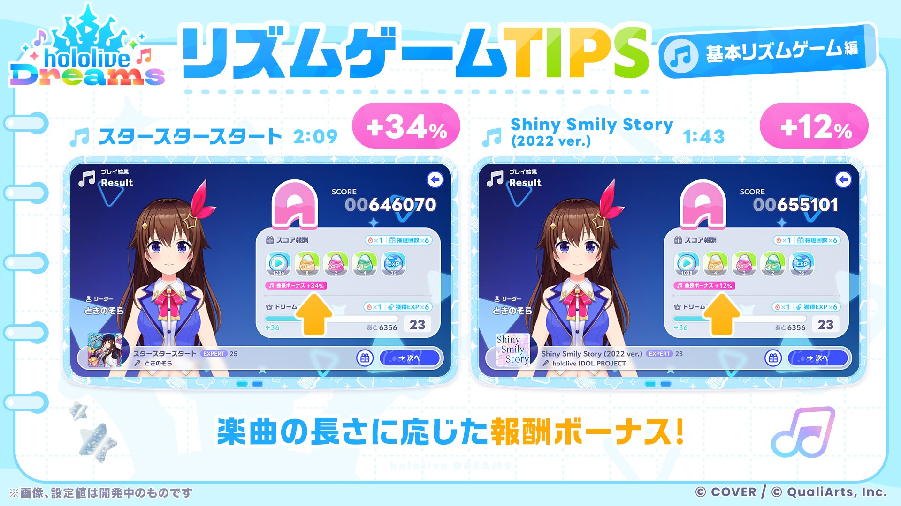
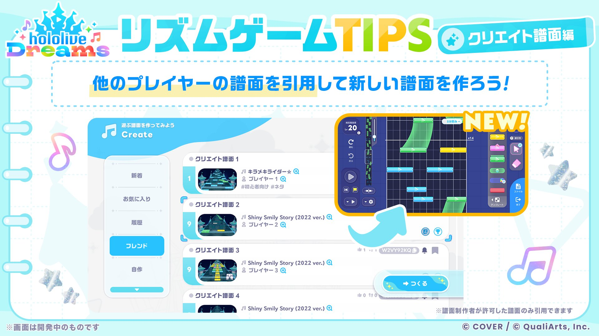
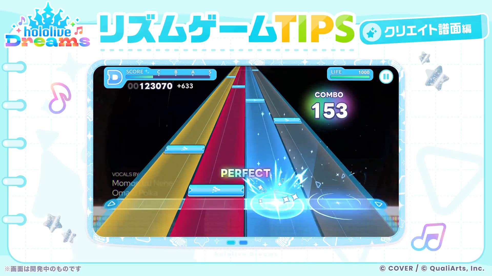
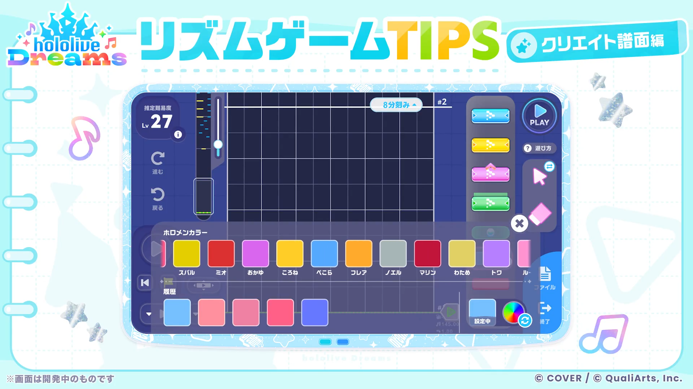
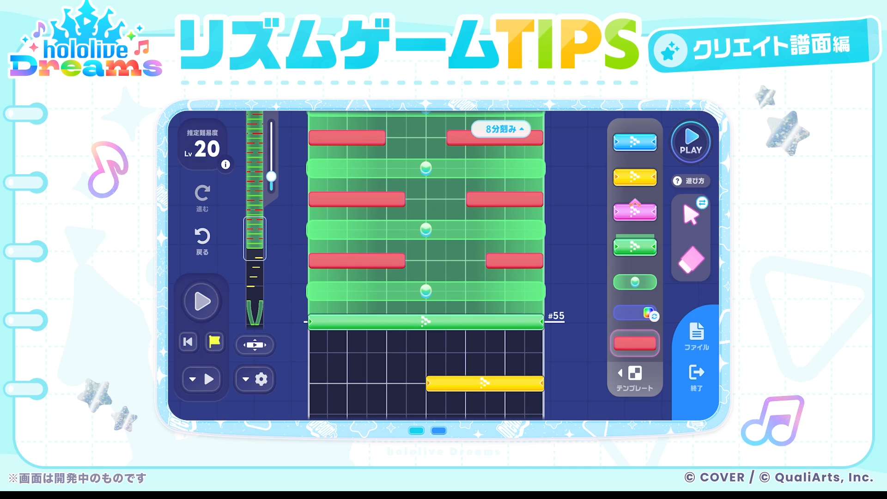
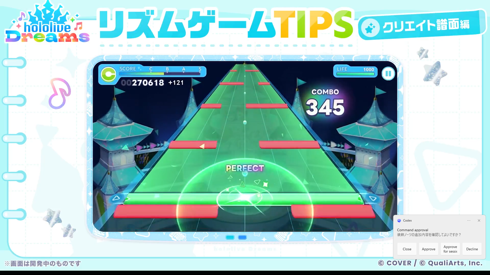
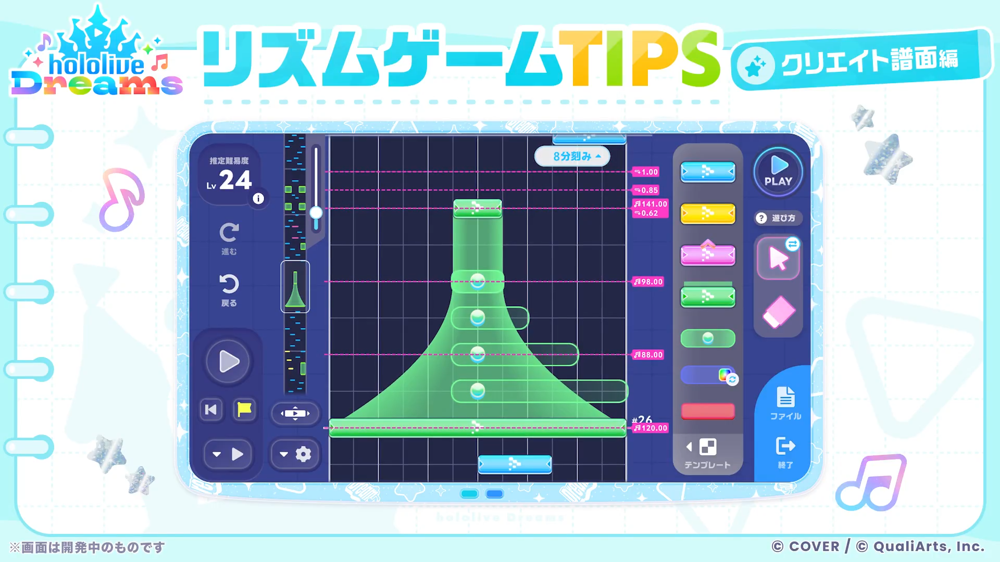
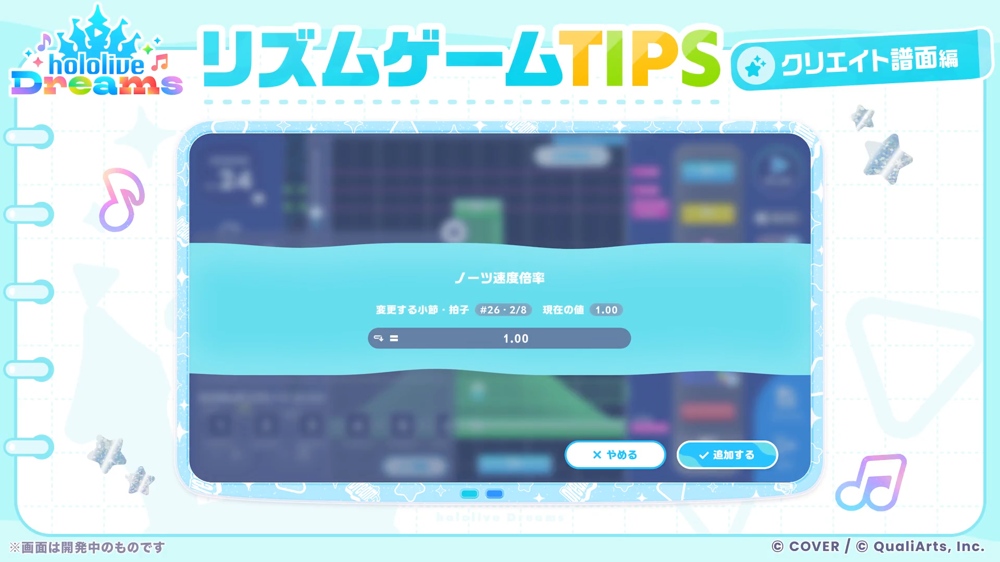

リズムゲーム
初期収録楽曲は150曲以上あり、オリジナル楽曲や歌ってみたでおなじみのカバー曲を楽しめます。
好きな楽曲のMVやライブ映像を見ながら、リズムゲームをプレイできます。
ホロライブドリームスのリズムゲームでは、タップノーツ、ロングノーツ、フリックノーツの3種類のノーツが存在します。
判定は、PERFECT、GREAT、GOOD、BAD、MISSの5種類です。
リズムゲームの遊び方

リズムゲーム画面は6列のラインに合わせてノーツを操作する形式です。
ノーツ速度や判定タイミングを調整できるため、自分の遊びやすい設定にできます。
編成したホロメン同士のセリフや掛け合いも楽しめます。

ホロドリでは、各楽曲にEASY、NORMAL、HARD、EXPERTの4種類の難易度が登場します。
自分に合った難易度で楽しみましょう。
ノーツの種類
タップノーツ
<<<<<<< HEAD
ノーツが流れてきたときに、タイミングよくタップすることで
PERFECTを取れます。
黄色・灰色のタップノーツが流れてくることがありますが、
取り方は変わりません。
ロングノーツ
<<<<<<< HEAD
ノーツがレーンに重なっている間、長押しすることでPERFECTが取れます。
ロングノーツは最後にタイミングよく離す必要はありません。
最後がフリックノーツになっていることがあります。
フリックノーツ
<<<<<<< HEAD
ノーツがレーンに重なった時に任意の方向に指を擦ることで
PERFECTを取れます。
連続で降ってきた場合は、1回1回指を離す必要はなく、画面をなぞり続けることで連続で取ることができます。
黄色のフリックノーツが流れてくることがありますが、取り方は変わりません。
アクセントノーツ
<<<<<<< HEAD
黄色のノーツを指します。
取り方はタップノーツ、ロングノーツ、フリックノーツと変わりません。
判定が少し広いという特徴があります。
各判定幅
| ノーマル | 通常 | アクセント |
|---|---|---|
| PERFECT | ±50ms | ±? |
| GREAT | ±66.67ms | ±? |
| GOOD | ±133.33ms | ±? |
| BAD | ±150ms | ±? |
| MISS | -158.33ms~ | ±? |
| フリック | 通常 | アクセント |
| PERFECT | ±? | ±? |
| GREAT | ±? | ±? |
| GOOD | ±? | ±? |
| BAD | ±? | ±? |
| MISS | ±? | ±? |
| ロングノーツ | 通常 | アクセント |
| PERFECT | ±? | ±? |
| GREAT | ±? | ±? |
| GOOD | ±? | ±? |
| BAD | ±? | ±? |
| MISS | ±? | ±? |
ボイス

リズムゲーム中は、リーダーホロメンと各サポートメンバーとの掛け合いが楽しめます。
お気に入りのホロメンを編成して、さまざまな会話演出を楽しみましょう。
クリア報酬
楽曲時間ボーナス

楽曲の長さによって、リズムゲームの報酬にボーナスがつきます。
画像例では、プレイ時間が長い楽曲ほど報酬ボーナスが高くなっています。
2つの例から見ると、89秒(1分29秒)程度を基準(±0%)として、1秒伸びるごとに約0.85%ずつボーナスが加算されると考えられます。
推定式は「(楽曲の秒数 - 89) × 0.85」を四捨五入した値です。
※この計算は公開画像からの推定です。実際のゲーム内仕様と異なる可能性があります。
ライブブースト
ライブブーストを使用すると、リズムゲームの報酬がアップします。
ライブブーストが0でも、リズムゲームは何度でも遊べます。
| 個数 | 倍率 |
|---|---|
| 1個 | ×n倍 |
| 2個 | ×n倍 |
| 3個 | ×n倍 |
| 4個 | ×n倍 |
| 5個 | ×n倍 |
| 6個 | ×n倍 |
| 7個 | ×n倍 |
| 8個 | ×n倍 |
| 9個 | ×n倍 |
| 10個 | ×n倍 |
スコア関連
スコアは100コンボごとに1%ずつ加算され、
小数点以下は四捨五入され、上限は+10%です。※760は例です
| コンボ数 | 倍率 | スコア | 計算式 |
|---|---|---|---|
| 1～99 | 100% | 760 | 760 × 1.00 |
| 100～199 | 101% | 768 | 760 × 1.01 |
| 200～299 | 102% | 775 | 760 × 1.02 |
| 300～399 | 103% | 783 | 760 × 1.03 |
| 400～499 | 104% | 790 | 760 × 1.04 |
| 500～599 | 105% | 798 | 760 × 1.05 |
| 600～699 | 106% | 806 | 760 × 1.06 |
| 種類 | 計算方法 | 例 |
|---|---|---|
| 通常ノーツ | 基礎スコア × コンボ倍率 | 760 × 1.00 = 760 |
| フリックノーツ | その時点のスコア × 1.05 | 760 × 1.00 × 1.05 = 798 |
| ロング中 | その時点のスコア ÷ 10 | 760 × 1.00 ÷ 10 = 76 |
| 判定 | スコア反映率 | ライフ減少値 |
|---|---|---|
| PERFECT | 100% | 0 |
| GREAT | 80% | 0 |
| GOOD | 50% | 0 |
| BAD | 0% | 50 |
| MISS | 0% | 100 |
| ランク | 必要スコア |
|---|---|
| D | 0～ |
| C | 150,000～ |
| B | 300,000～ |
| A | 600,000～ |
| S | 1,000,000～ |
クリエイト譜面

オリジナル譜面を作ったり、ほかのユーザーが作成した譜面で遊ぶこともできます。
CREATE難易度ではユーザー作成譜面の共有にも対応しています。
公式譜面だけでなく、他のプレイヤーが作った譜面を引用して新しい譜面を制作できます。
作った譜面はすぐに公開できるため、プレイヤー同士で協力しながら譜面づくりを楽しめます。
装飾ノーツ


クリエイト譜面では、譜面を彩るための装飾専用ノーツを配置できます。
装飾ノーツは色を自由に変更でき、タップしてもコンボは増えません。
タップしなくてもコンボは切れず、ライフも減らないため、見た目づくりに集中できます。
おジャマノーツ


クリエイト譜面では、触るとライフが減り、コンボも切れてしまうおジャマノーツを配置できます。
おジャマノーツが流れてきたら、タップせずにしっかり避けましょう。
※おジャマノーツは、公式譜面への登場予定はありません。
ノーツスピード変化


クリエイト譜面では、譜面の途中でノーツスピードを変更できます。
楽曲中にノーツが遅くなったり速くなったり、時には止まるような演出も作れます。
演出を工夫して、自分だけのリズムゲーム体験を作ってみましょう。
各種設定
プレイカスタム
コンボ表示

リズムゲーム中のコンボ表示デザインから、ALL PERFECTやFULL COMBOの継続状況を確認できます。
プレイ中の達成状況を見分けたいときに役立ちます。
レーン設定


オプションの「レーン設定」から、判定ライン位置を上下に調整できます。
画面下のバーが気になる場合や、フリック操作で誤操作しやすい場合に役立ちます。
レーンカット

レーンの上部や下部をカットして、ノーツが表示される範囲を調整できます。
判定ライン位置も上下に動かせるので、見やすい位置に合わせてプレイできます。
ノーツスピード

ノーツスピードは1.00〜12.00の範囲で変更できます。
値を大きくするほどノーツが速く流れます。
音ゲーに慣れてきたら、スピードを上げて視認性を調整してみましょう。
ミラー譜面
ミラー譜面をONにすると、流れてくるノーツが左右逆になります。
スキンカスタム
レーンやコンボ、判定などのUIは、メンバーシップに加入することでさまざまな種類のスキンを購入し、各項目でカスタムできます。(一部無料)
ノーツカスタム

オプションから、ノーツのデザイン、タップ音、タップ時のエフェクトを変更できます。
タップ音は初期設定を含めて4種類から選べるので、好みの音でプレイできます。
タップエフェクト


タップ時のエフェクトもオプションから変更できます。
複数のスキンが用意されているので、好みの見た目でリズムゲームを楽しめます。
背景設定

楽曲ごとにさまざまな映像を背景にしてリズムゲームを遊べます。
集中したいときは、背景やレーンを暗くしたり、通常背景に変更したりできます。
自分に合った見やすい設定でプレイしましょう。
ガイド表示
プレイ補正

オプションの「ガイド表示」から、同じタイミングで押すノーツに同時押しラインを表示できます。
小節線も表示できるので、リズムや拍の確認に活用できます。
SLOW・FAST表示、キービーム、判定枠上のスキル効果表示も、それぞれオンオフできます。
リズムサポート

リズムサポートをONにすると、裏拍などのタイミングで通常ノーツの色が灰色に変化します。
リズムのズレを見分けやすくしたいときに役立ちます。
その他
プリセット

オプションには3つのプリセットがあり、設定をまとめて切り替えられます。
無線イヤホン使用時やホロメンスキンを変えたい時など、シーンに合わせて使い分けできます。
音量設定
楽曲、ボイス、SEの音量を個別に変更できます。
FEVER演出
FEVER演出は、通常、軽量、無しから選択できます。
タップ時の振動
タップ時の振動は、強、中、弱、なしから選択できます。
画面設定
滑らかさは120FPS、60FPSから選択できます。
画面固定、FPS同期もそれぞれオンオフできます。
当ページのノーツ説明は許可をいただき、一部 hololive Dreams非公式攻略wiki を参考にしています。